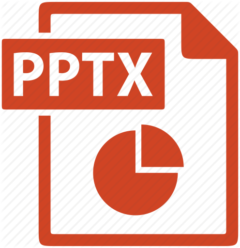

I am a PhD candidate at the
College of Information and Computer Sciences (CICS),
University of Massachusetts, Amherst.
I work in the
DREAM lab
as a research assistant with
Prof. Alexandra Meliou.
My primary area of research revolves around data
management; but, the application areas of my research have been
interdisciplinary, spanning from program synthesis and software engineering
to machine learning, natural language processing, and human-computer
interaction. I am interested in designing mechanisms for enhancing system
usability and developing intelligent tools towards boosting productivity
for a diverse group of users, ranging from end users to data
scientists and developers.
Recent News
-
-
-
[February 2021] Demonstration paper accepted to
SIGMOD 2021.
-
-
-
-
-
[June 2020] Demonstration paper accepted to VLDB 2020.
-
-
-
-
[February 2020] Demonstration paper accepted to
SIGMOD 2020.
-
-
[May 2019] Worked as a research intern at
PROSE,
Microsoft, Bellevue.
Mentor:
Ashish Tiwari.
-
-
[May 2018] Worked as a research intern at
DMX,
Microsoft Research, Redmond.
Mentor:
Suman Nath.
-
[February 2018] Demonstration paper accepted to
SIGMOD 2018.
-
Research Projects
Publications
Conference papers and demonstrations (peer-reviewed)
-
Anna Fariha, Ashish Tiwari, Alexandra Meliou, Arjun Radhakrishna, Sumit Gulwani:
CoCo: Interactive Exploration of Conformance Constraints for Data Understanding and Data Cleaning [Demo]. SIGMOD 2021
-
Anna Fariha, Ashish Tiwari, Arjun Radhakrishna, Sumit Gulwani, Alexandra Meliou:
Conformance Constraint Discovery: Measuring Trust in Data-Driven Systems. SIGMOD 2021

-
Anna Fariha, Ashish Tiwari, Arjun Radhakrishna, Sumit Gulwani:
ExTuNe: Explaining Tuple Non-conformance [Demo]. SIGMOD 2020
-
Anna Fariha, Suman Nath, Alexandra Meliou:
Causality-Guided Adaptive Interventional Debugging. SIGMOD 2020
-
Anna Fariha, Matteo Brucato, Peter J. Haas, Alexandra Meliou:
SuDocu: Summarizing Documents by Example [Demo]. PVLDB 2020
-
Anna Fariha, Alexandra Meliou:
Example-Driven Query Intent Discovery: Abductive Reasoning using Semantic Similarity. PVLDB 2019
-
Anna Fariha, Sheikh Muhammad Sarwar, Alexandra Meliou:
SQuID: Semantic Similarity-Aware Query Intent Discovery [Demo]. SIGMOD 2018
Technical reports
-
Sainyam Galhotra, Anna Fariha, Raoni Lourenço, Juliana Freire, Alexandra Meliou, Divesh Srivastava:
DataExposer: Exposing Disconnect between Data and Systems.
[under review at VLDB] (2021)
-
Nishant Yadav, Oscar Youngquist, Anna Fariha, Matteo Brucato, Julian Killingback, Peter J. Haas, Alexandra Meliou:
[submission under review] (2021)
-
Anna Fariha, Ashish Tiwari, Arjun Radhakrishna, Sumit Gulwani, Alexandra Meliou:
Conformance Constraint Discovery: Measuring Trust in Data-Driven Systems.
CoRR abs/2003.01289 (2020)
-
Maliha Tashfia Islam, Anna Fariha, Alexandra Meliou:
Through the Data Management Lens: Experimental Analysis and Evaluation of Fair Classification.
CoRR abs/2101.07361 (2021)
-
Anna Fariha, Lucy Cousins, Narges Mahyar, Alexandra Meliou:
Example-Driven User Intent Discovery: Empowering Users to Cross the SQL Barrier Through Query by Example.
CoRR abs/2012.14800 (2020)
-
Anna Fariha, Suman Nath, Alexandra Meliou:
Causality-Guided Adaptive Interventional Debugging.
CoRR abs/2003.09539 (2020)
-
Anna Fariha, Alexandra Meliou:
Example-Driven Query Intent Discovery: Abductive Reasoning using Semantic Similarity.
CoRR abs/1906.10322 (2019)
Undergraduate and masters research
-
Anna Fariha, Chowdhury Farhan Ahmed, Carson K. Leung, Md. Samiullah, Suraiya Pervin, Longbing Cao:
A New Framework for Mining Frequent Interaction Patterns from Meeting Databases. Eng. Appl. Artif. Intell. 2015
-
Amit Mandal, Mehedi Hasan, Anna Fariha, Chowdhury Farhan Ahmed: GSCS - Graph Stream Classification with Side Information. APWeb 2015
-
Quazi Marufur Rahman, Anna Fariha, Amit Mandal, Chowdhury Farhan Ahmed, Carson K. Leung:
A Sliding Window-Based Algorithm for Detecting Leaders from Social Network Action Streams. WI-IAT 2015
-
Shafaet Ashraf, Sheikh Muhammad Sarwar, Md. Abeed Hassan, Saifuddin Md. Tareeq, Anna Fariha:
An Efficient Method for Extracting Subtrees Against Forest Query. IMCOM 2015
-
Md. Samiullah, Chowdhury Farhan Ahmed, Anna Fariha, Akiz Uddin Ahmed:
Efficient Graph Classification in Shifted Datasets Using Weighted Correlated Feature Selection. LMCE@ECML-PKDD. 2014
-
Md. Samiullah, Chowdhury Farhan Ahmed, Anna Fariha, Md. Rafiqul Islam, Nicolas Lachiche:
Mining Frequent Correlated Graphs with a New Measure. Expert Syst. Appl. 2014
-
Md. Samiullah, Chowdhury Farhan Ahmed, Manziba Akanda Nishi, Anna Fariha, S. M. Abdullah, Md. Rafiqul Islam:
Correlation Mining in Graph Databases with a New Measure. APWeb 2013
-
Anna Fariha, Chowdhury Farhan Ahmed, Carson Kai-Sang Leung, S. M. Abdullah, Longbing Cao:
Mining Frequent Patterns from Human Interactions in Meetings Using Directed Acyclic Graphs. PAKDD 2013
-
Anna Fariha, Shariful Islam, Chowdhury Farhan Ahmed, Byeong-Soo Jeong:
An Algorithm towards Indexing Evolving Graph Databases. GSTF Journal on Computing 2012
-
Shariful Islam, Anna Fariha, Chowdhury Farhan Ahmed, Byeong-Soo Jeong:
EGDIM: Evolving Graph Database Indexing Method. ICUIMC 2012
Service
Courses & course projects